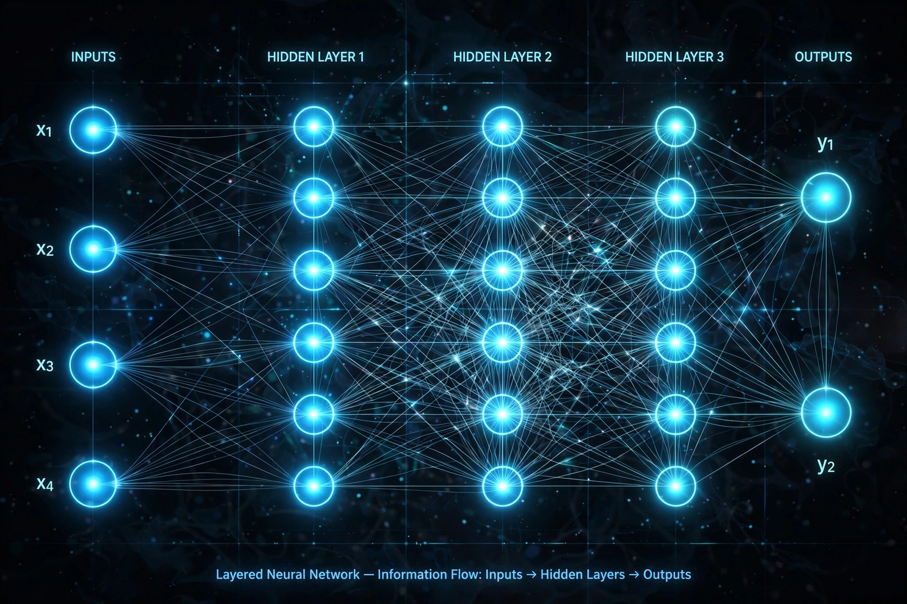

Deep learning

[Image: a layered neural network diagram — columns of glowing nodes connected by many fine lines, inputs on the left, outputs on the right]Deep learning is a subset of machine learning that uses multi-layered ('deep') artificial neural networks to learn representations of data. Given large amounts of data and computing power, deep learning systems learn their own features rather than relying on hand-engineered ones, and since about 2012 they have driven breakthroughs in computer vision, speech recognition, natural language processing and generative AI.
Key architectures include convolutional neural networks for images, recurrent networks and, since 2017, the transformer, whose attention mechanism underlies large language models such as the GPT family.
Rise
Neural networks were studied from the 1950s (the perceptron) and trained by backpropagation from the 1980s, but were limited by data and hardware. The 2012 AlexNet victory in the ImageNet image-recognition competition — trained on graphics processors (GPUs) — opened the deep-learning era, and industry laboratories scaled networks, data and compute by orders of magnitude.
Milestones include AlphaGo and AlphaFold from DeepMind, large-scale speech and translation systems, image generators such as DALL-E and diffusion models, and the conversational systems that reached the public from 2022.
Criticism and limits
Deep learning systems can be opaque ('black boxes'), data-hungry, computationally expensive and prone to confident errors and bias inherited from training data. Research into interpretability, efficiency and grounding continues alongside the scaling of capabilities.